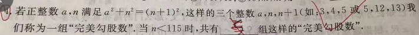

p21 完美勾股数
选择填空
勾股定理完全平方数论奇偶性
★★★☆

📷 点击查看原图
若正整数 a,n 满足 a2+n2=(n+1)2，这样的三个整数 a,n,n+1（如：3,4,5 或 5,12,13）我们称为一组"完美勾股数"。当 n<115 时，共有 ______ 组这样的"完美勾股数"。
📌 知识点总结（点击展开／收起）
📌 知识点总结
| 知识点 | 说明 |
|---|
| 勾股定理 | 对直角三角形 a2+n2=(n+1)2 等价于 a2=2n+1 |
| 偶数边连续勾股数 | 3,4,5 与 5,12,13 都属于「偶数边差 1」这一族 |
| 奇偶性 | a2=2n+1 是奇数，故 a 必为奇数 |
| 枚举 + 上界 | 由 n<115 限定 a 的取值范围后逐个验证 |
✍️ 解题过程
第一步：化简条件 a2+n2=(n+1)2
展开右边：
(n+1)2=n2+2n+1
代入原式：
a2+n2=n2+2n+1
两边消去 n2，得到核心等式：
a2=2n+1
第二步：分析 a 的奇偶性
2n+1 是奇数，所以 a2 必须是奇数 ⇒ a 也必须是奇数。
题目给的两个例子：
a=3,n=4⇒a2=9=2×4+1 ✓
a=5,n=12⇒a2=25=2×12+1 ✓
第三步：由 n<115 估算 a 的范围
由 a2=2n+1<2×115+1=231，得 a2<231。又因 a 是正奇数，故 a2 必为奇完全平方数。
a∈1,3,5,7,9,11,13,15,…，其中 a2<231
奇完全平方数序列：12,,32,,52,,…,,152=225,,172=289。因 152=225<231 满足，而 172=289>231 已越界，故 a≤15。
第四步：逐个枚举
| a | a2 | n=2a2−1 | 是否满足 n<115 |
|---|
| 1 | 1 | 0 | ✗（n 须为正整数） |
| 3 | 9 | 4 | ✓ (3,4,5) |
| 5 | 25 | 12 | ✓ (5,12,13) |
| 7 | 49 | 24 | ✓ (7,24,25) |
| 9 | 81 | 40 | ✓ (9,40,41) |
| 11 | 121 | 60 | ✓ (11,60,61) |
| 13 | 169 | 84 | ✓ (13,84,85) |
| 15 | 225 | 112 | ✓ (15,112,113) |
| 17 | 289 | 144 | ✗（n≥115） |
✅ 答案：7
📚 南昌/江西中考类似题（同类拓展）
题1（公式 + 范围）：正整数 a,n 满足 a2+n2=(n+1)2，当 a=21 时，n= ______；该组数为 (21,____,____)。📄 查看详细解答 →
💡 由 a2=2n+1 解出 n。
题2（差值规律）：在 a2=2n+1 中，若 a 是奇数，则 n 一定是什么数？若 a 是偶数，会有解吗？📄 查看详细解答 →
💡 奇偶性分析。
题3（换族数论）：正整数 a,m 满足 a2+m2=(m+2)2，当 m<100 时，共有多少组？📄 查看详细解答 →
💡 类比 a2=4m+4 的奇偶性。